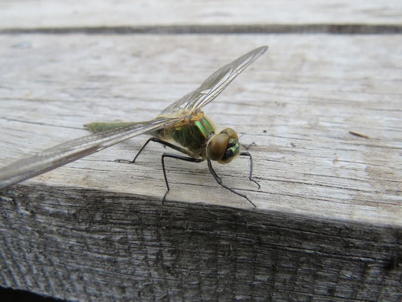

Glänzende Smaragdlibelle
Somatochlora metallica
Ein im Sonnenlicht irisierender Glanz zeichnet die prächtigen FalkenLibellen aus. Von den im Ried beheimateten vier Arten treffen wir am ehesten auf die grün schillernde "Metallica". Wenn im Hochsommer die Männchen auf Partnersuche sind fliegen sie entlang der Uferlinien so dass wir ihnen "hautnah" begegnen können.